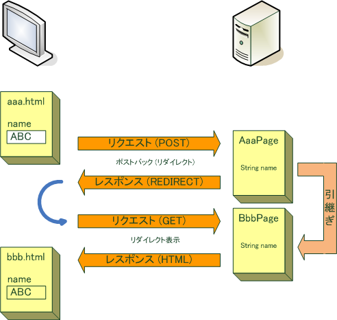
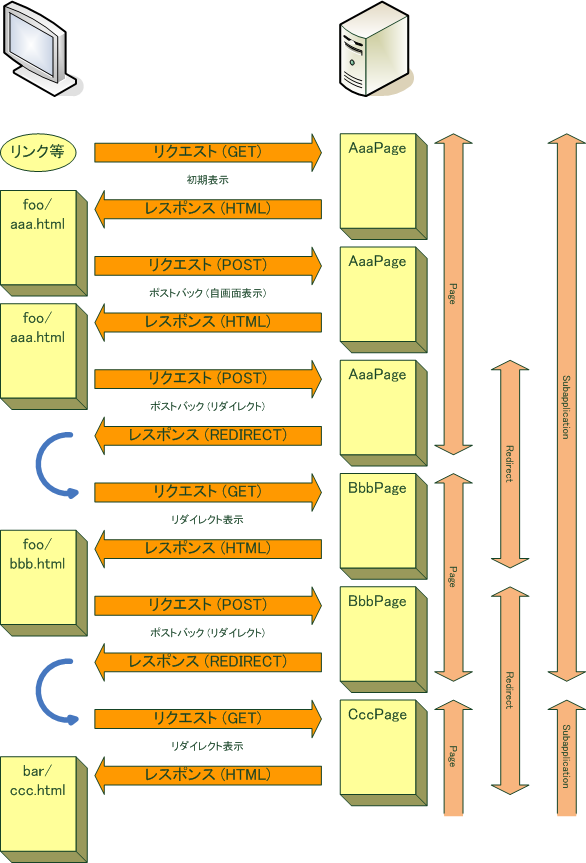

状態の引継ぎ
Teeda Extensionは PRGパターン で画面遷移します． 通常， 画面遷移の際はページクラスの間で状態 (プロパティの値) を引き継ぐ必要があります．
リダイレクト表示のリクエストではURLの長さ制限もあるため， リクエストパラメータを使用するのは現実的ではありません． そこでHTTPセッションを使用することになりますが， HTTPセッション (メモリ) の使用量を抑えるために有効期間に注意する必要があります．
Teeda Extensionでは， 多くのアプリケーションで必要になる複数の有効期間 (スコープ) を持つ状態の引継ぎをサポートします． この機能により， アプリケーションがHTTPセッションを直接扱うことなく， 簡単かつ安全にページクラス間で状態を引き継げるようにしています．
スコープ
Teeda Extensionは次のスコープで状態を管理します．
- ページスコープ
- 同じページを表示している間， 状態を維持するスコープです．
- リダイレクトスコープ
- リダイレクトの間，状態を維持するスコープです．
- サブアプリケーションスコープ
- 同じ サブアプリケーション 内のページを表示している間，状態を維持するスコープです．
- デフォルトスコープ
- 正しくは独立したスコープではなく， サブアプリケーションスコープを利用して状態を引き継ぐスコープです．
次の図は各スコープの有効期間を表しています (デフォルトスコープの有効期間はサブアプリケーションスコープと同じです)．
ページスコープ
ページスコープは， ポストバック (自画面表示) や ポストバック (リダイレクト) ～ リダイレクト表示 で同じページを表示している間維持されるスコープです．
ページスコープは， 初期表示 や リダイレクト表示 で開始されます． 初期表示 や リダイレクト表示 で他のページがリクエストされると破棄されて， 新しいページスコープが開始されます．
ページスコープを使用するには， ページクラスのプロパティにアノテーションで明示的に指定します．
@PageScope public String name;
@PageScope
が指定されたプロパティは， 画面表示の際にページスコープに含められます．
初期表示 で現在と同じページが表示される場合は， ページスコープは維持されません． 新しいページスコープが開始されます． ポストバック (リダイレクト) で現在と同じページが表示される場合は， ページスコープは維持されます．
リダイレクトスコープ
リダイレクトスコープは， リダイレクトの間だけ維持されるスコープです． 入力画面から確認画面に値を引き継ぐ場合などに使うことができます．
リダイレクトスコープは， ポストバック (リダイレクト) で開始され， リダイレクト表示 後に破棄されます．
リダイレクトスコープを使用するには， ページクラスのプロパティにアノテーションで明示的に指定します．
@RedirectScope public String name;
@RedirectScope
が指定されたプロパティは，
ポストバック (リダイレクト)
の際にリダイレクトスコープに含められます．
サブアプリケーションスコープ
サブアプリケーションスコープは， 同じ サブアプリケーション のページを表示している間維持されるスコープです．
サブアプリケーションスコープは， 初期表示 や リダイレクト表示 で 他の サブアプリケーション から遷移した際に開始されます． 初期表示 や リダイレクト表示 で他のサブアプリケーションのページが要求されると破棄されて， 新しいサブアプリケーションスコープが開始されます．
サブアプリケーションスコープを使用するには， ページクラスのプロパティにアノテーションで明示的に指定します．
@SubapplicationScope public String name;
@SubapplicationScope
が指定されたプロパティは， 画面表示の際にサブアプリケーションスコープに含められます．
デフォルトスコープ
デフォルトスコープは，実際にはスコープではなく，サブアプリケーションスコープの一種です．
ポストバック (リダイレクト) の際に，アノテーションが指定されていないプロパティで， 次画面のページクラスと共通のプロパティ は， 自動的にサブアプリケーションスコープに含められて次画面に引き継がれます． これがデフォルトスコープです．
デフォルトスコープを使用するには， ページクラスのプロパティにスコープのアノテーションを指定する必要はありません．
public String name;
デフォルトスコープのプロパティは， ポストバック (リダイレクト) の際にサブアプリケーションスコープに含められます．
デフォルトスコープのプロパティは， 初期表示 や ポストバック (自画面表示) ではサブアプリケーションスコープに含められません． 次画面のページクラスにないプロパティもサブアプリケーションスコープに含められません． これらの点がサブアプリケーションスコープと異なる点です．
引継ぎの制御
デフォルトでは， 遷移元ページと遷移先ページで共通のプロパティは 全て 引継ぎの対象となりますが， プロパティの一部または全部を引き継がないようにすることも可能です．
doFinish～()メソッド
サブミットボタンの
id
属性および対応する
ライフサイクルメソッド
の名前が
doFinish
または
doOnceFinish
で始まっている場合，
ポストバック
された際にサブアプリケーションスコープ (デフォルトスコープ含む) の内容はクリアされ，
遷移先画面に状態は引き継がれなくなります (リダイレクトスコープは引き継がれます)．
TakeOverアノテーション
ライフサイクルメソッド
に
@TakeOver
アノテーションを指定することで， 遷移先画面に引き継ぐプロパティをきめ細かく指定することができます．
@TakeOver
アノテーションでは，
type
属性でプロパティを引き継ぐ方法を次の3種類から指定します．
INCLUDEproperties属性で指定したプロパティだけを遷移先画面に引き継ぎます．EXCLUDEproperties属性で指定したプロパティを除いたプロパティだけを遷移先画面に引き継ぎます．NEVER- 全てのプロパティを遷移先画面に引き継ぎません．
次の例では，
doXxx()メソッドは，fooおよびbarプロパティのみを遷移先画面に引き継ぎます．doYyy()メソッドは，fooおよびbarを除いたプロパティのみを遷移先画面に引き継ぎます．doZzz()メソッドは，全てのプロパティを遷移先画面に引き継ぎません．
@TakeOver(type = TakeOverType.INCLUDE, properties = "foo, bar")
public Class doXxx() {
...
}
@TakeOver(type = TakeOverType.EXCLUDE, properties = "foo, bar")
public Class doYyy() {
...
}
@TakeOver(type = TakeOverType.NEVER)
public Class doZzz() {
...
}